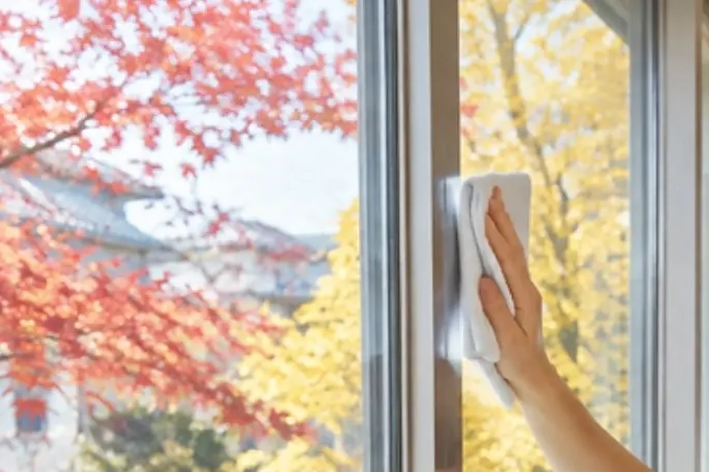

CLEAN CARE JOURNAL / いまのブーム解剖
大掃除は、なぜ「秋」へ引っ越し始めたのか。

もし、年末の大掃除が「12 月の行事」でなくなったら? 実はいま、その引っ越しが静かに始まっています。
8 割がやるのに、7 割がつらい行事
マクロミルが 2026 年 10 月に全国 3,000 人へ聞いた調査では、年末に大掃除をする人は 84.3%。ところが、その人たちの 72.5% が「負担」と答えています。30〜60 代の女性では、およそ 8 割が負担だと感じていました。ほとんどの人がやるのに、ほとんどの人がしんどい。行事として、なかなか珍しい立ち位置です。
そこで出てきたのが「秋掃除」。同じ調査で、秋に掃除を前倒しすることに前向きな人は 62.1%。すでにやっている人は 11.9% と少数派ですが、「やったことはないがやってみたい」が 44.0% もいます。ブームの入口に、行列ができている状態です。
そもそも、なぜ「年末」だったのか
話は江戸時代にさかのぼります。江戸城の煤払いは寛永 17 年 12 月 13 日に始まったと伝えられ、武家だけでなく商人や町人の家も、この日に煤を払いました。目的は、きれいにした家に新しい年の神様を迎える「お清め」。年末の大掃除は、もともと掃除というより、儀式だったわけです。
つまり 12 月という日付は、汚れの都合ではなく、暦の都合で決まっていました。囲炉裏やかまどの煤が一年分たまった家なら、それで理にかなっていたのかもしれません。けれど、住まいの形はずいぶん変わりました。
寒さは、掃除の「見えない敵」
秋掃除の良さとして、調査でいちばん多く挙がったのは「作業を分散できる」(49.1%)。次が「窓を開けても寒くない」(40.6%)、「予定に余裕がある」(37.7%)でした。秋にやりたい場所の上位は、窓・網戸・サッシ(44.3%)とレンジフード(26.5%)。どれも、外気に触れたり、油が冷えて固まりやすかったりする場所です。
冬の窓掃除は、手がかじかみ、拭いた水がなかなか乾きません。油汚れも、冷えると粘りが増して落としにくくなります。12 月の大掃除がつらいのは、気合いが足りないからではなく、季節そのものが不利だから。ここが、このブームのいちばん面白いところです。
もうひとつ見落とされがちなのが、時間の問題です。12 月は仕事も家庭も予定が詰まり、日が短く、暗くなるのも早い。窓の拭き残しは明るいうちでないと見えません。秋は、日照と気温と予定の余白が、まだそろっている季節です。調査で「予定に余裕がある」が 3 位に入ったのは、多くの人がこの差を体で知っているからでしょう。
どんでん返し:儀式は、残してもいい
では年末の大掃除はいらないのか。そうではありません。重い汚れを秋に済ませておけば、年末は「仕上げの拭き掃除」だけで済みます。煤払いの心——新しい年を、整った場所で迎える——は残したまま、重労働だけを季節の良いときへ移す。昔の行事を捨てるのではなく、手順を組み替える。それが秋掃除の正体です。
考えてみれば、江戸の人たちが 12 月 13 日を選んだのも、正月準備をそこから始めるための段取りでした。いきなり大晦日に全部をやるのではなく、日にちを決めて、手順を分ける。秋掃除は新しい流行のようでいて、じつは「段取りで年を越す」という古い知恵の、現代版なのかもしれません。
現場では
LOTUS クリーンケアサービスでも、窓まわりやレンジフード、エアコンのように「寒くなる前のほうが進めやすい」場所は、秋のうちのご相談をおすすめしています。同じ日・同じ建物で複数の作業をまとめると段取りが減るので、エアコンと換気扇を一緒に、といったまとめ方もご相談いただけます。まずはスマートフォンの写真 1 枚から、作業の量と日程の目安をお出しします。
今日の持ち帰り
- 大掃除の「12 月」は、汚れではなく暦の都合で決まった日付。
- 寒さは、窓と油汚れを落としにくくする見えない敵。
- 重い場所は秋に、年末は仕上げだけ。行事の心は残せる。
出典:マクロミル「秋掃除」に関する調査(2026 年 10 月 5〜6 日、全国 18〜79 歳 3,000 人) ／ nippon.com「煤払い」(『東都歳事記』引用)
クリーンケア専用ダイヤル070-3220-4946
※営業・勧誘のお電話はご遠慮ください